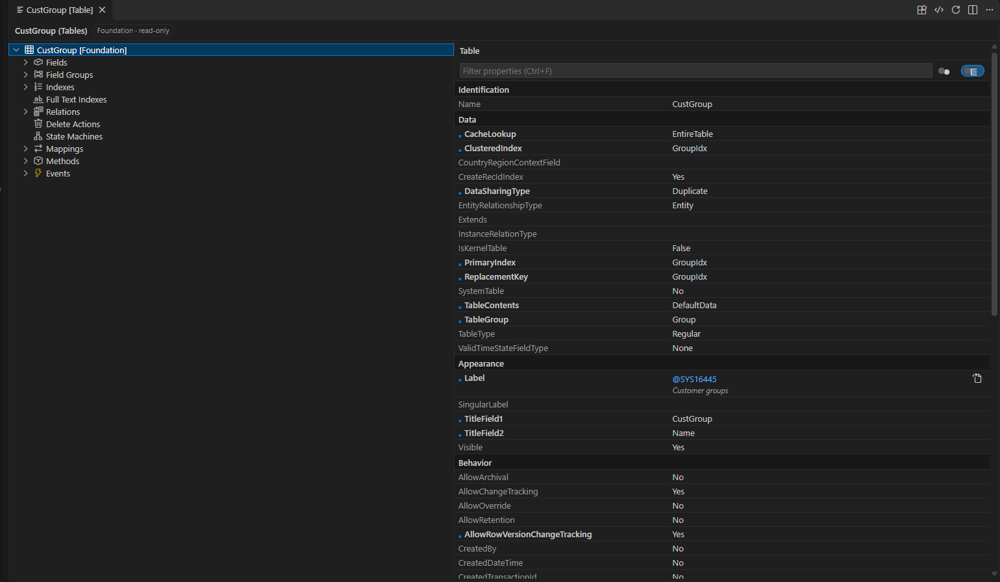

Properties Grid and Pickers¶
The Properties grid is the right-hand pane of the Element Designer. It lists the properties of the selected node, grouped in categories like Visual Studio's Properties window, and lets you change them on elements of your own models. Pickers help you fill in properties that name an element or a label: an element search for EDTs, enums, tables, forms, menu items and other references, and a label picker that finds an existing label or creates a new one.

When to use it¶
- Read a property of any element: the EDT of a field, the table of a data source, the label of a menu item (with its text resolved).
- Change properties of nodes in your own models: labels, help texts, EDTs, enum types, configuration keys, sizes, Visible, Mandatory and so on.
- Find the properties that differ from their default (what the developer actually set).
- Jump from a property to the element it names.
- Give a field or control a label without leaving the designer: find an existing one or create a new label in one of your label files.
Before you start¶
- Open an element in the Element Designer and select a node (not a folder, method or event).
- Editing needs the element to be in one of your own models. On other elements the grid is read-only.
- The label picker creates labels only in label files of your own models that have an
en-USlanguage.
How to use it¶
The grid¶
- Select a node in the tree. The grid shows the node type as a header (for example
TableFieldString), a toolbar and the property rows. - Each row has the property name on the left and its value on the right.
- Hover or focus a row to see its description in the footer under the grid. Properties changed from their default say "Changed from the default." when they have no description.
Rows are grouped by category in this order: Identification, Data, Appearance, Behavior, Configuration and security, Misc. A property's category is the metadata's own category when it has one; otherwise F&O Studio derives it from the property name (for example names containing Label, Visible or Width go to Appearance, names containing Table, Field or ExtendedDataType to Data). Report nodes use Visual Studio's report designer names and categories, sorted alphabetically, and show sub-objects such as Page Size or Margin as expandable rows (see Report Element Designer).
Toolbar¶
| Control | What it does |
|---|---|
| Filter properties (Ctrl+F) | Shows only rows whose name, display name or value contains the text. Ctrl+F anywhere in the designer puts the cursor here. |
| Filled circle toggle: Only properties changed from their default | Hides properties that still have their default value |
| Tree toggle: Group by category (off: alphabetical) | Switches between categories and one alphabetical list |
The filter and toggles stay as they are while you select other nodes.
Changed values¶
A property whose value differs from the default of a new node of the same type is marked with a dot and shown in bold. Its tooltip says "(changed from the default)". This is how you see at a glance what was set on a standard field or control.
Editing values¶
On elements of your own models:
| Property kind | Editor | Commit |
|---|---|---|
| Text and numbers | Text box | Press Enter or leave the box. Escape restores the old value. |
| Enums | Drop-down with the enum's values | On selection |
| Yes/No (boolean) | Drop-down with False and True |
On selection |
Name |
Read-only | Use Rename… in the tree's right-click menu |
| Complex values | Read-only | Edit the child nodes instead |
Each change is saved immediately through the metadata API. The value is converted to the property's type; when that fails you see "'
On forms, every property change also redraws the form preview, so you see the effect of Width, Columns, ArrangeMethod and the other layout properties right away (see Form Designer and Preview).
Labels in properties¶
When a property holds a label reference such as @SYS7149 or @ContosoLabels:OrderStatus, the grid shows the reference and, under it, the label text (en-US). The go-to button next to it opens the label in the Label Editor on that label.
References and Go to¶
When a property names another element (an EDT, an enum, a table, a form, a menu item, a configuration key, a base class...), the row offers several ways to go there:
- the go-to button at the end of the value (tooltip "Go to
( )"); - Ctrl+click on the value box;
- on read-only elements, click the value (it is shown as a link);
- right-click the row > Go to Referenced Element….
In the tree, F12 on a node opens the first element it refers to, and Go to Referenced Element… on the node lists all of them.
The element picker¶
String properties that name an element have a … button (or press Alt+Down in the value). The picker searches while you type:
- Type at least 3 characters of the element name.
- F&O Studio searches the metadata (up to 50 matches) and lists the elements of the right type with their type and model.
- Pick one. The property is set to its name and saved.
Properties with a picker include ExtendedDataType (EDT), EnumType (enum), Table and RelatedTable (table), ConfigurationKey, Extends (EDT or class), FormRef and Form (form), MenuItemName (display, action or output menu item), Query and Class. Any other property the server recognizes as a reference gets a picker for its referenced type.
On a report dataset, the Query property's … button opens the data source and field selection instead (see Report Datasets).
The label picker¶
The label properties Label, HelpText, Caption, Description, DeveloperDocumentation and SingularLabel have a … button (or Alt+Down) that opens the label picker:
- Type the text you want, for example
Order status. - After 3 characters the picker searches the en-US texts of the label files of your models (up to 20 matches per file). Matches show the text with the reference, for example
@ContosoLabels:OrderStatus. - Below a separator, one entry per label file offers Create label "Order status" in
. - Pick an existing label to use it, or a create entry to add a new label.
- You can also type a reference directly, such as
@SYS7149; the picker offers Use @SYS7149.
When you create a label, F&O Studio builds the label ID from the text: words are capitalized and joined, other characters removed, at most 40 characters (Order status becomes OrderStatus). An ID that does not start with a letter gets an L in front. When the ID already exists, a number is added (OrderStatus1, OrderStatus2, ...). The label is created in en-US. Translate it later with the Label Editor or Label Tools.
The picker opens on the current text of the property (not the reference) so you can refine it.
Dropping elements on properties¶
Drag an element from the Application Explorer or the project view onto a string property row (hold Shift while dropping into the designer). The property is set to the element's name when the property refers to that kind of element. Where a property depends on another one, that one follows: dropping a menu item on MenuItemName also sets MenuItemType; dropping a form, class, report or query on a menu item's Object sets its ObjectType; dropping a menu item on a security entry point's ObjectName sets its ObjectType.
Options and settings¶
The grid and pickers have no settings.
How it works¶
- The grid is rendered by media/element.js; the panel and the message handling are in src/elementDesigner.ts; the pickers are in src/pickers.ts.
- Bridge action
get_element_propertiesreturns, per property: name, value, kind (enum,bool,string,number,other), read-only flag, category, description, enum options, whether the value differs from the default, the resolved label text and the referenced element. It is implemented in MetaModelBridge.ElementDesigner.cs by reflection: only members marked[AxProperty]are listed, and defaults come from a new instance of the node's metadata class. - Bridge action
set_element_propertyreads the element fresh, refuses non-custom models, walks to the node, converts the text to the property type, sets it and saves the element with the metadata provider'sUpdate. Only[AxProperty]members that can be written are accepted;Namenever. - Undo and redo keep the before and after values in the designer tab's memory and call
set_element_propertyagain. - The element picker calls bridge action
find_object(250 ms after you stop typing) and filters the matches by type. - The label picker lists your label files from the models'
AxLabelFilefolders, searches withread_label(300 ms after you stop typing) and creates withcreate_label. Labels are written to the label text files (<Id>.en-US.label.txt) in ID order by the server'sLabelStore. - Drops on property rows call
drop_on_property(MetaModelBridge.Drops.cs).
Limitations¶
- Properties with complex values (anything that is not text, number, enum or Yes/No) are read-only in the grid.
- The label picker searches and creates en-US texts only, and only in label files of your models.
- Label text shown under a reference is the en-US text.
- Undo covers property changes in the current designer tab only.
Troubleshooting¶
| Symptom | Cause | Fix |
|---|---|---|
| Values are plain text, no editors | The element is not in your model, or the node is a base node of an extension | Edit through your own element or extension |
| The element picker shows nothing | Fewer than 3 characters typed, or no element of that type matches | Type more of the name |
| The label picker offers no Create label entries | None of your models has a label file with en-US | Create a label file in your model (see New Element) |
| "The label could not be created: ..." | The server refused the label (for example the file is not writable) | Read the message; check the label file belongs to your model |
| "' |
The property is read-only or not a designer property | Change it through another node or in code |
| "' |
The property is not a string reference property | Use the picker or type the value |
Related¶
- Element Designer
- Label Editor
- Label Tools
- Form Designer and Preview
- Open Element
- Report Element Designer
- Drag and Drop